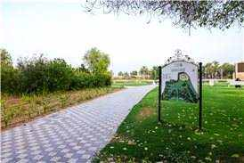

Accessibility profile
Choose what matters for your visit. This changes what the journey map highlights and how AR cues are phrased. Deliberately kept to four toggles.
Display & sensory settings
Sensory substitution controls, grounded in Focus Area 2's own listed opportunities (Smart Navigation, Haptic Feedback, Sensory Substitution).
Scales every screen, not just this one.
Wider letter and line spacing for easier reading.
Maximum contrast, yellow-on-black.
Beeps faster as you approach the next stage — audio-only distance sense, no need to look at the screen.
Vibrates on stage arrival and confirmations (phone hardware required).
Rewrites each stage's spoken cue for the access needs you selected above, instead of reading one script to everybody. Needs the local proxy running — without it the written cues are used and nothing breaks. not checked
Interface and voice cues.
Journey map
See the whole arrival journey play out on the real map — no camera or sensors needed, works anywhere.
Locating the park…
Stages
Accessible facilities nearby
Live from OpenStreetMap, around the challenge's GIS point. Where a feature has no accessibility tag we say so rather than guessing.
- Loading nearby features…
AR navigate
IdleSimulated Trip plays the real journey as a narrated cinematic sequence through the actual site photos — no camera or sensors, works anywhere, this is what "arrival at Al Jahili Park" looks like. Classroom demo uses your device's real camera and compass right now. Live uses real GPS + compass at the park itself.
step-free, shaded, even passable with a caveat may not suit your profile

Live mode uses real satellite positioning. Stages only advance on a fix accurate enough to trust.
What the camera has spotted
Visit before you travel
Every way out
Pre-visit story
A calm, narrated walkthrough of what the visit will look and feel like — helps reduce anxiety about the unfamiliar before arriving. First, how are you feeling about the visit?
Quick communication board
Tap a phrase — it's spoken aloud and shown large on screen, for a visitor who can't or doesn't want to speak. Grounded in Focus Area 3 (Cognitive & Learning Support: "Communication Aids — AAC devices, symbol-based communication") and Focus Area 4 (Communication & Social Inclusion).
Report a barrier
Accessibility arrival checklist
Exportable summary for the municipality team, per the challenge brief's own suggested direction.
| Stage | Note | Time |
|---|
Hands-free control
This drives a real on-screen cursor and clicks whatever it's over — not a menu that cycles through a fixed list. Adapted from our earlier head & voice control project (which moved the OS mouse via webcam); this version moves an in-page cursor instead, since a browser page can't take over the OS pointer.
Voice control
Try saying: "open map", "start navigation", "next", "back", "read description", "where am I", "report a barrier", "help".
Head cursor + blink click
Move your head — a circular cursor follows on screen in real time. Blink to click whatever it's resting on: a nav card, a map marker, a button. No mouse or touch at any point.
cursor: —